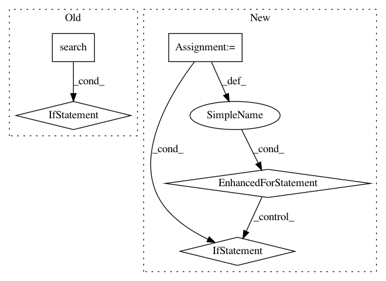

0de3c091c75e36ffb4c12a2048110df37cafb644,src/fonduer/candidates/mentions.py,Ngrams,apply,#Ngrams#Any#,58
Before Change
and self.split_rgx is not None
and end - start > 0
):
m = re.search(
self.split_rgx,
context.text[start - offsets[0] : end - offsets[0] + 1],
)
if m is not None:
ts1 = TemporarySpan(
char_start=start,
char_end=start + m.start(1) - 1,
sentence=context,
)
if ts1 not in seen and ts1.get_span():
seen.add(ts1)
yield ts1
ts2 = TemporarySpan(
char_start=start + m.end(1), char_end=end, sentence=context
)
if ts2 not in seen and ts2.get_span():
seen.add(ts2)
yield ts2
class MentionNgrams(Ngrams):
Defines the **space** of Mentions.
Defines the space of Mentions as all n-grams (n_min <= n <= n_max) in a
After Change
seen.add(ts)
yield ts
// And check splits together
for word in re.split("|".join(self.split_tokens), text):
ts = TemporarySpan(
char_start=text.index(word),
char_end=text.index(word) + len(word) - 1,
sentence=context,
)
if ts not in seen and ts.get_span():
logger.warning(word)
seen.add(ts)
yield ts
class MentionNgrams(Ngrams):
Defines the **space** of Mentions.
Defines the space of Mentions as all n-grams (n_min <= n <= n_max) in a
In pattern: SUPERPATTERN
Frequency: 4
Non-data size: 5
Instances
Project Name: HazyResearch/fonduer
Commit Name: 0de3c091c75e36ffb4c12a2048110df37cafb644
Time: 2018-09-20
Author: lwhsiao@stanford.edu
File Name: src/fonduer/candidates/mentions.py
Class Name: Ngrams
Method Name: apply
Project Name: GoogleCloudPlatform/PerfKitBenchmarker
Commit Name: bd3a1021d7d990d5d4a8a71cc0621485af2d09e4
Time: 2019-09-03
Author: chriswilkes@google.com
File Name: perfkitbenchmarker/linux_virtual_machine.py
Class Name: LsCpuResults
Method Name: __init__
Project Name: andresriancho/w3af
Commit Name: 69ff07c2bf368ebc0d6f0700a9735451ed851999
Time: 2018-01-02
Author: andres.riancho@gmail.com
File Name: w3af/plugins/audit/global_redirect.py
Class Name: global_redirect
Method Name: _javascript_redirect
Project Name: has2k1/plotnine
Commit Name: a3d56beaf95b4b4cff9b70af7312e0a3bdeb6e98
Time: 2017-11-21
Author: has2k1@gmail.com
File Name: plotnine/aes.py
Class Name:
Method Name: is_calculated_aes